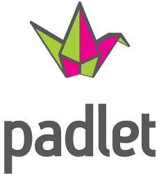

Padlet es una plataforma digital que permite crear murales colaborativos, ofreciendo la posibilidad de construir espacios donde se pueden presentar recursos multimedia, ya sea videos, audio, fotos o documentos. Estos recursos se agregan como notas adhesivas, como si fuesen “post-its”.
Este mural o póster interactivo permite publicar, almacenar o compartir recursos tanto de manera individual o en colaboración. Además, es posible trabajar con otras personas que usen la plataforma en todo el mundo.
Esta herramienta es fácil de utilizar ya que cuenta con una interfaz intuitiva y cuenta con 29 idiomas disponibles. Es de uso gratuito con sólo crear una cuenta. Además cuenta con una versión de pago (Padlet Backpack) que permite obtener beneficios extra, con un costo de alrededor $5 mensuales.
Esta disponible desde cualquier navegador web, y distintos dispositivos móviles IOS como para Android.
Padlet permite compartir el link en redes sociales y publicar en un sitio web o en cualquier entorno virtual.
Los docentes pueden crear el tema y el objetivo así como configurar una URL específica para que los alumnos se unan fácilmente al proyecto [5].
A continuación se muestra un videotutorial del uso de esta herramienta: